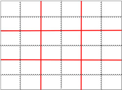
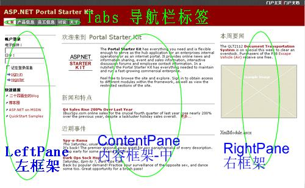
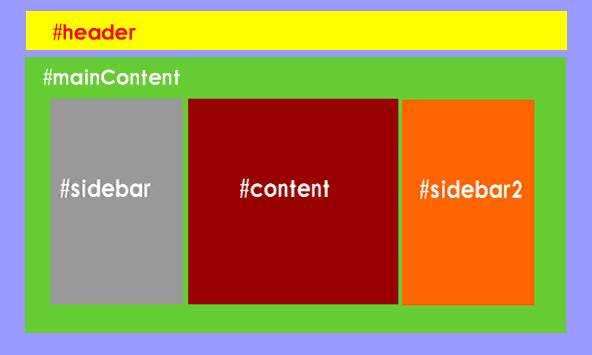

网站设计与制作流程
网站是网页的集合。首页是网站的第一个网页。
网站设计流程
“先大后小，先简单后复杂”原则。
网站定位： 收集素材 ： 规划栏目（如右图） 页面方案 页面制作 后台功能实现 |
DW中定义网站
网页在全世界流通，前提：适当的规范、共同的标准协定。
基本前提
- 不用中文文件名（文件夹亦然）
- 一个网站对应一个文件夹（其下分类包含网站所有的网页、图片文件、音频文件、视频文件等）
定义站点的方法
- 建立网站对应的文件夹
- DW中，站点->新建站点（高级选项卡下操作）
善用文件面板（F8）
- 文件管理
- 文件夹管理
- 站点管理
练习1：制作一个网站框架，在该网站下建四个网页文件。
如：“我的空间”网站，可包含：最新动态（news.html）、我的相册（album.html）、我的简历（resume.html）、作品展示（works.html）、阅读随想（essay.html）等页。
网页布局设计
网页布局认识
海报、杂志封面及内页需要版面布局，网页同理。
何谓网页布局
- 网页布局是指网页元素在页面上所处位置的设计。
- PS网页效果图设计时应先确定布局再细化内容。
页面尺寸
页面尺寸的确定需考虑浏览者的显示器分辨率情况。
页面宽度的选择
|
|
||||||||||
说明：
|
|||||||||||
页面长度的选择
|
|||||||||||
三分法则布局
黄金比例三分法则在网页设计中可适用。
|  |
网页布局的方法
表格布局法表格可实现网页的精确排版和定位布局。
表格布局的优势：能对不同对象加以处理，定位便捷。表格嵌套太多时会影响页面浏览速度。
框架布局法
框架结构的方式布局页面，每个框架中对应不同的网页。

div+css布局
HTML4.0标准中，CSS(层叠样式表)能完全精确的定位文本和图片。

DIV+CSS布局较Table布局减少了页面代码，加载速度得到很大的提高。
横幅设计与制作
网页上方的横幅是最重要的视觉元素。
横幅设计欣赏

网站横幅设计
横幅设计的一般原则
- banner中加入图片与网站的风格配合，能传达视觉上的信息
- 提供简单明了的导航链接
- 安排网站logo或网站名称阐明主题
设计步骤
- 区域的划分
|
|

- 图片的选取与加入
- 文字风格与配色
- 繁杂的图片 / 简单的字体
- 优雅的图片 / 优雅的字体
- 平静的图片 / 装饰性强的字体
- 链接风格与配色
网站横幅制作
- 设计横幅图片并保存
- 设计网站导航栏（设计时，协调好宽度）
- 采用表格布局或div+css布局，按设计图制作网站横幅
练习2：按自拟的网站主题设计与制作网站横幅，包括可操作的导航栏。
首页设计与制作
网站分类及首页特点
由于网站功能定位的差异化，决定了不同类型网站首页肩负“职责”和“表现形式”的差异性。
电子商务网站
- 有效的组织产品信息、合理呈现的产品分类目录；
- 首页功能重点是目录导航功能；
- 向用户传递刺激购买的信息，如：促销打折信息、新品上市、热销商品等。淘宝
企业网站
- 体现专业性和可信度，让用户对企业和产品建立信任；
- 有企业介绍信息、资质证明、产品详尽信息等的入口；
- 首页显示企业联系地址、固定电话、网站经过备案等信息。
政府类网站
- 信息公开， 新闻动态、工作动态、通知公告、法规文件等；
- 办事流程的指引和用户分流指引
- 与民众互动交流的链接 （领导信箱、在线访谈、民意调查等）政府网站
“实用性”网站
如招聘网站、交友网站等。
- 首页功能重点在于体现网站能够给用户带来的价值
- 首页要合理展示一些真实有效，并且具有“诱惑力”的信息（如招聘信息和职位等）
- 向用户传达理念，体现专业性和正规性
首页设计与制作
- 版面设计
- 字体设计
- 内容与组织
- 配色与点缀
- 首页制作
练习3：利用练习2制作好的横幅，进行利网站首页设计与制作（index.html）。
网站整体设计与制作
网页层次组织
- 一级页面：网站首页
- 二级页面：由网站首页（导航）可链接访问到的网页。
- 三级页面：由二级网页上的导航可访问到的网页。
次级页面设计与制作
- 保证一致性：功能导航、元素设计、颜色、字体、颜色字体对比等方面，与网站整体风格一致。
- 链接完整性：任一页面都可通过上级链接可达。
- 便捷返回首页：任一页面可便捷返回首页。
www.yale.edu的首页与二级页面：
| Last | Home | Next |
©2012-2018 Yang Peili. All rights reserved. contact me